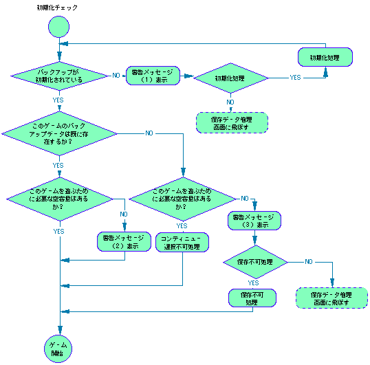
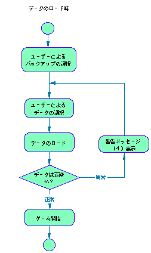
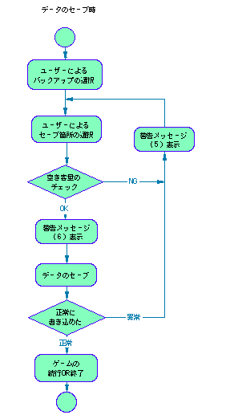

前のページへ戻る ｜ メニューに戻る
３＞警告メッセージ及びシーケンス
初期化チェック・存在／容量チェック・ロード・セーブの各処理に伴って、以下に示す警告メッセージを必ず用意する。主要な用語については基準用語集に示したものを使用し、特に“禁句”をメッセージ内で使用しないように注意すること。
＜警告メッセージ(1)＞
本体RAMもしくはカートリッジRAMが初期化されていない場合。
＝本体BOOT ROMでの表現＝
- 全部消す（初期化）
- 「本体の全ての記録を消します。よろしいですか？（初期化）」
- 「本体の全ての記録を消しました。（初期化しました。）」
- 「初期化できませんでした。」
＝推奨例＝
- 「本体RAMのバックアップの準備がまだできていません。（初期化されていま せん）」
- 「本体RAMの全ての記録を消します。（初期化します）よろしいですか？ はい いいえ 」
- 「本体RAMの全ての記録を消しました。（初期化しました）」
- 「本体RAMの全ての記録を消すことができませんでした。（初期化できません でした）」
- 「セガサターン本体の保存データ管理画面で、全ての記録を消してください。（初期化してください）」
- 「LボタンまたはRボタンを押したままリセットボタンを押すと、セガサターン 本体の保存データ管理画面へ進みます。」
※“初期化”という言葉は常に括弧扱いとし、単独で使用することは禁止する。
※「本体（RAM）」←→「カートリッジ（RAM）」
＜警告メッセージ(2)＞
新たにセーブする容量が確保できない場合。既に存在する記録を犠牲にする以外にセーブするすべがないため、その旨を伝える必要がある。また同時にこのゲームで使用する容量のインフォも行う必要がある。
＝推奨例＝
- 「新しい記録を保存するための空き容量がありません。このままゲームをスタートした場合、前の記録を消さない限り新しい記録を保存することはできません。」
- 「新しい記録を保存するためには***の空き容量が必要です。」
- 「セガサターン本体の保存データ管理画面で、他のゲームの記録を消すかまたはカートリッジRAMにコピーして、ゲームを再スタートして下さい。LボタンまたはRボタンを押したままリセットボタンを押すと、保存データ管理画面へ進みます。」
※ゲーム性上、記録の更新が行われても問題無しと判断される場合は不要。
＜警告メッセージ(3)＞
ゲームデータは無く、空き容量も無い。つまり全くセーブ機能が使えない場合。
この場合でもユーザーの判断でゲームをプレイできる（当然セーブ機能は使えない）ようにしておかなければならない。また同時にこのゲームで使用する容量のインフォも行う必要がある。
＝推奨例＝
- 「このままゲームを開始した場合、記録を保存することはできません。ゲームを開始しますか？ はい いいえ 」
- 「このゲームの記録を保存するためには***の空き容量が必要です。」
- 「セガサターン本体の保存データ管理画面で、他のゲームの記録を消すかまたはカートリッジRAMにコピーして、ゲームを再スタートして下さい。」
- 「LボタンまたはRボタンを押したままリセットボタンを押すと、セガサターン本体の保存データ管理画面へ進みます。」
＜コンティニュー選択不可処理＞
ゲームの記録が無いためコンティニューができない場合、つまり購入直後の初期状態。コンティニューの項目を選択できないようにするか、もしくはゲームデータ選択画面（ロード画面）そのものをスキップするなどの対処が必要である。
＜警告メッセージ(4)＞
読み込みに失敗した場合、データ内容が壊れていた場合などの、ロード時の異常に対する警告。ロードできなかった旨もしくは、その記録が使用できない旨を伝える。
＝推奨例＝
- 「記録を正しく読み込むことができませんでした。」
- 「ロードに失敗しました。」
- 「この記録でゲームをスタートすることはできません。」
- 「この記録は使用できません。」
※“壊れている”等、ハードの故障と混同する可能性のある表現は使用しない。
＜警告メッセージ(5)＞
書き込みに失敗した場合、容量がいっぱいでセーブできなかった場合などの、セーブ時の異常に対する警告。容量がいっぱいの場合は、そのゲームで使用する容量のインフォを行わなければならない。
＝推奨例＝
- 「記録を正しく保存することができませんでした。もう一度やり直して下さい。」
- 「このゲームの記録を保存するためには***の空き容量が必要です。」
- 「セガサターン本体の保存データ管理画面で、他のゲームの記録を消すかまたはカートリッジRAMにコピーして、ゲームを再スタートして下さい。」
- 「LボタンまたはRボタンを押したままリセットボタンを押すと、セガサターン本体の保存データ管理画面へ進みます。」
＜警告メッセージ(6)＞
セーブ中に、本体の電源をOFFしないよう促す警告。ゲームシーケンス中適当なところで表示するか、取扱説明書に明記するのが望ましい。
＝推奨例＝
- 「ゲームの記録を保存中です。電源を切ると記録を正しく保存できない恐れがあります。」
＝本体BOOT ROMでの表現＝
No. 名前 コメント 使用量 本体の空き容量（単位なし）選んで消す
- 「本体の記録を消します。消したい記録を選んで、Cボタンを押して下さい。（Bボタンで終了）」
- 「・・・を本体から消します。よろしいですか？ はい いいえ 」
- 「・・・記録を本体から消しました。」
- 「・・・記録を本体から消せませんでした。」
カートリッジにコピー
- 「本体の記録をカートリッジにコピーします。コピーしたい記録を選んで、Cボタンを押して下さい。（Bボタンで取消し）」
- 「・・・をカートリッジへコピーしてよろしいですか？」
- 「カートリッジに・・・をコピーしました。」
- 「本体の記録をカートリッジへコピーできませんでした。」
- 「カートリッジに同じ名前の記録があります。カートリッジの記録を消してコピーしますか？」
- 「カートリッジの空き容量が足りないので、コピーできません。」
- 記録編集画面
- 〜の記録
- 記録の名前
- コメント 日付 使用量 空き容量
- 切替 消す コピー 並替 日付 終了
- 本体 カートリッジ 拡張メモリー
- 記録数
- 〜個の記録を消します。
- よろしいですか？ YES NO
- 〜個の記録をコピーします。
- 同じ名前の記録があります。
- コピーしますか？
- コピーできませんでした。
- 〜が、いっぱいです。
- 〜個の記録はコピーできませんでした。
- 〜個の記録をコピーしました。
- コピー先
- 中止
- ファイル名順
- 新しい順
- ゲームごと新しい順
図 別冊１-2.初期化チェック・存在／容量チェック処理シーケンス

図 別冊１-3.ロード処理シーケンス

図 別冊１-4.セーブ処理シーケンス

前のページへ戻る ｜ メニューに戻る